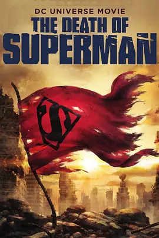

7.5
超人之死
The Death of Superman
2018
美国
评分 7.5
导演:
杰克·卡斯托雷纳 / 山姆·刘
演员:
杰瑞·奥康奈尔 / 丽贝卡·罗梅恩 / 雷恩·威尔森 / 罗莎里奥·道森 / 内森·菲利安
类型:
动作,科幻
剧情简介
巨浪般的危机从太空深处逼近，城市还未来得及察觉，灾难已在地面悄然蔓延。毁灭日以不可阻挡的姿态冲破防线，它的每一步都让街区震动，建筑玻璃在冲击波下碎裂，人群在惊慌中四散奔逃。英雄们先后赶到战场，却在这股蛮横的力量前接连败退。混乱的街道被拉扯得支离破碎，警报在空中持续回响，仿佛整座城市都被压向崩溃边缘。超人降临时，空气中的压迫感似乎得到片刻缓解。他的身影穿过烟尘，落在风暴中央，目光坚定而沉静。战斗随即爆发，拳风撕裂空气，两者每一次碰撞都像雷霆落下，引发地面震颤。尽管力量强大，超人仍努力将破坏控制在可承受的范围内，他在废墟之间穿梭，竭力保护被困的平民。但毁灭日的蛮力毫不松懈，它像是只懂破坏的野兽，不断将战场推向更加惨烈的程度。在钢铁之躯逐渐被重击逼到极限之际，城市天际线被火光照亮。超人拖着疲惫的身体重新站起，他清楚自己无法退让，即便代价沉重，也必须挡下这场灾难。最终的对决让周围一切陷入令人窒息的静止，风沙、碎石与能量冲击交织成刺目的光，仿佛整座城市在见证一段无法逆转的牺牲。当尘埃落定，人们围在破碎的街道上望着他的身影，沉默中混杂着悲伤与敬意。英雄的陨落不仅结束了战斗，也让所有人第一次真正体会到他守护这座城市的重量。